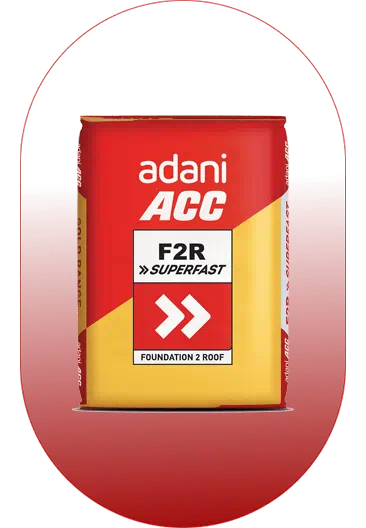
ACC · Adani Cement
F2R
Fast-setting cement for structural work and construction programmes where early progress matters.
Common uses
RCC foundations, beams, columns and roof slabs.
ACC, UltraTech, Ambuja cement and steel rods for homes and construction sites around Cuttack.
Browse cement products ↓Prepare a material enquiry ↗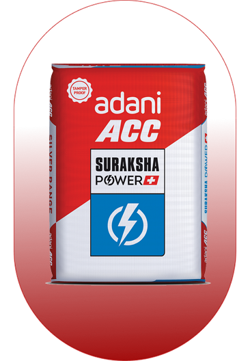
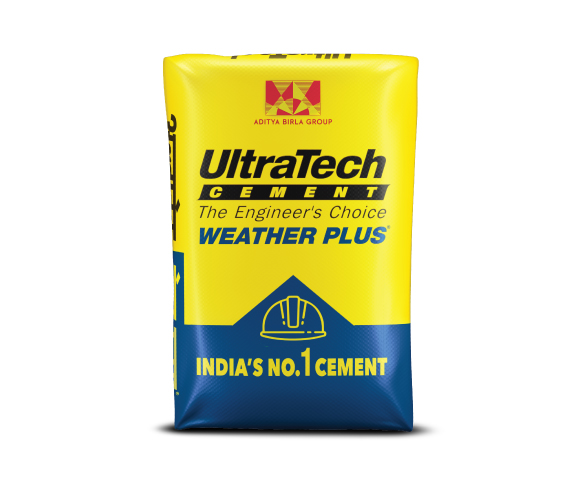
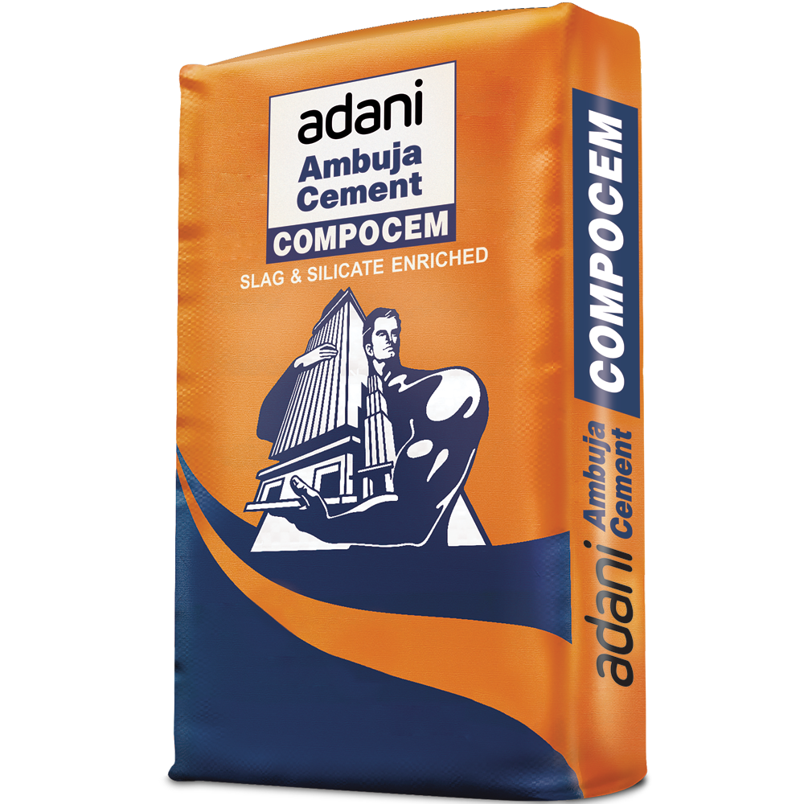
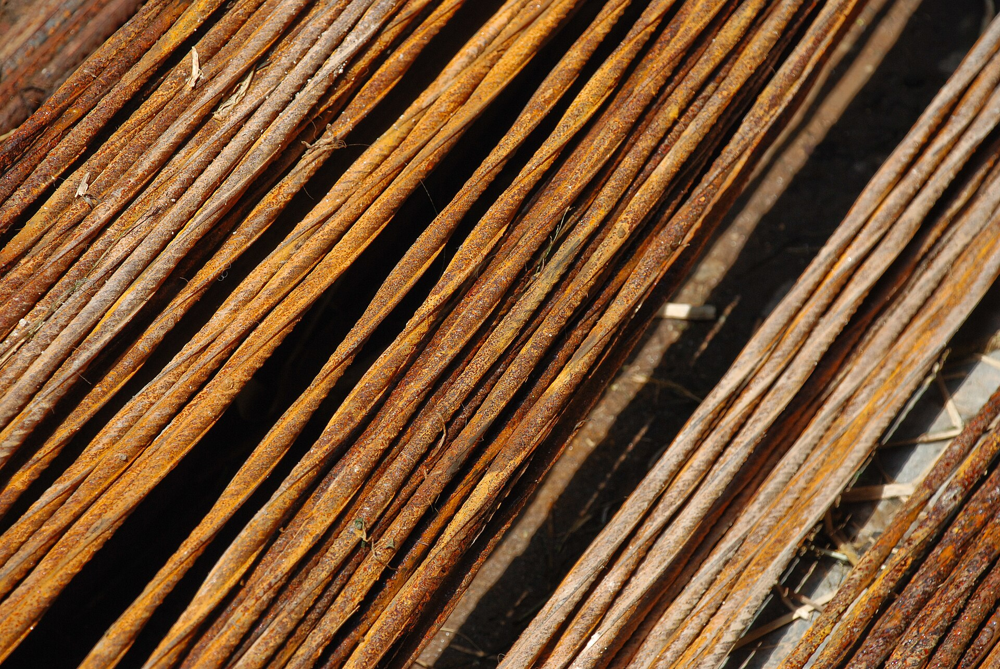
From cement bags
to reinforcement bars.
The brands
you build with.

ACC · Adani Cement
Fast-setting cement for structural work and construction programmes where early progress matters.
Common uses
RCC foundations, beams, columns and roof slabs.
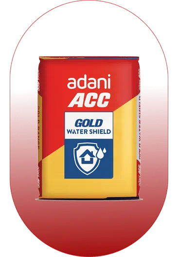
ACC · Adani Cement
Water-repellent cement focused on limiting moisture absorption and dampness.
Common uses
Foundations, roof slabs, external walls and damp-prone areas.
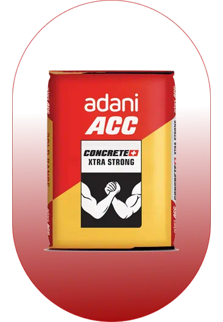
ACC · Adani Cement
Performance additives support durable concrete and improved workability.
Common uses
RCC foundations, beams, columns, slabs, masonry and plaster.
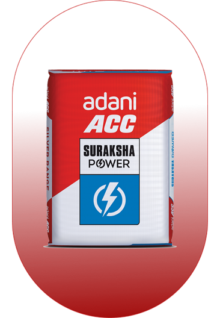
ACC · Adani Cement
A focus on long-term strength, cohesive mixes and corrosion resistance.
Common uses
Foundations, beams, columns, slab casting, masonry and wall plaster.
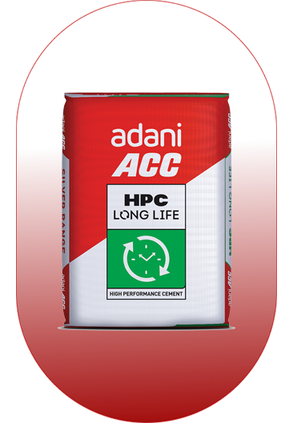
ACC · Adani Cement
Blended cement designed for long-term strength and durable concrete.
Common uses
Residential and infrastructure concrete, including foundations, beams and slabs.
ACC · Adani Cement
Strength-enhancing materials and dense concrete support lasting durability.
Common uses
Foundations, beams, columns, slabs, brick masonry and wall plaster.
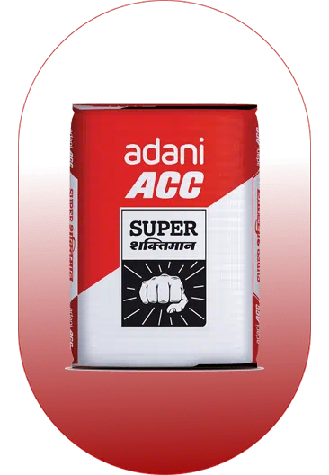
ACC · Adani Cement
Faster setting and workability for individual homes and residential projects.
Common uses
Foundations, beams, columns, roof slabs, masonry and plaster.
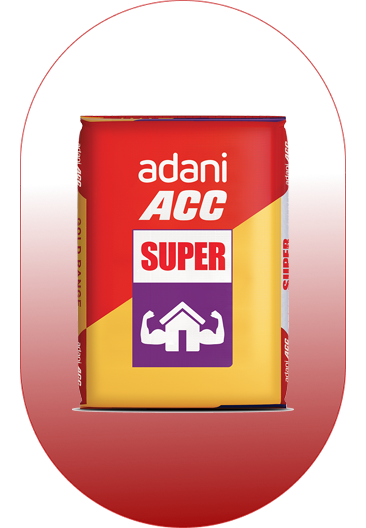
ACC · Adani Cement
An all-round residential cement focused on strength and low-permeability concrete.
Common uses
Foundations, slabs, beams, columns, brickwork and wall or ceiling plaster.
UltraTech · Aditya Birla Group
Water-repellent cement developed to help protect a home against dampness.
Common uses
Roofs, external walls, foundations and other moisture-exposed parts of a home.
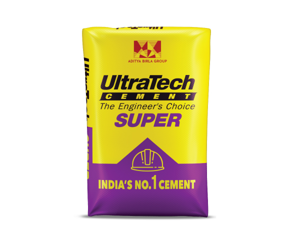
UltraTech · Aditya Birla Group
Blended PPC cement with an emphasis on early strength and faster construction.
Common uses
Foundations, RCC slabs, beams, columns, brickwork, plastering and tile laying.
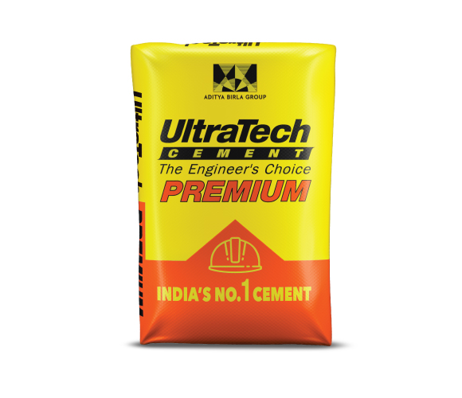
UltraTech · Aditya Birla Group
Dense blended cement focused on durability and resistance to aggressive exposure.
Common uses
PCC, masonry, plaster, RCC slabs, beams and columns; specified marine or underground work.
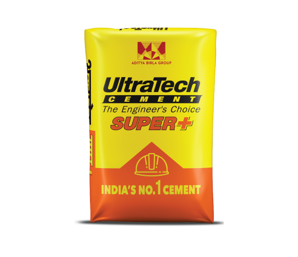
UltraTech · Aditya Birla Group
Listed in UltraTech’s official cement range. Ask us for the local product specification.
Common uses
Application-specific guidance is not published on the range page; confirm before selection.
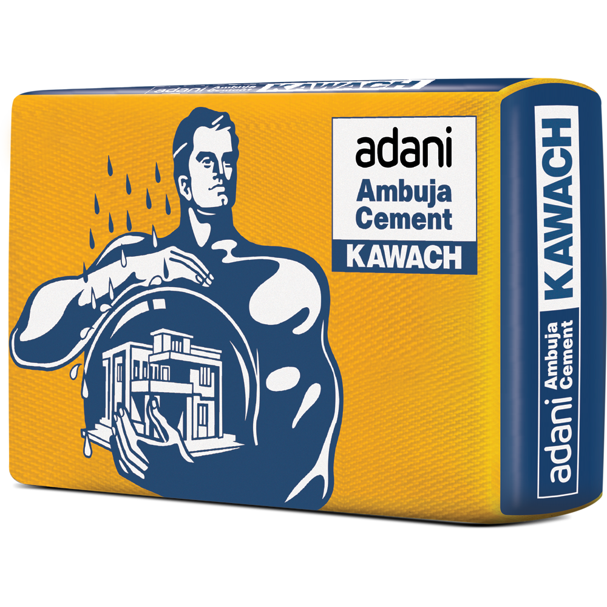
Ambuja · Adani Cement
Water-repellent cement designed to reduce moisture ingress and support durability.
Common uses
Foundations, beams, columns, masonry, plaster and slab casting.
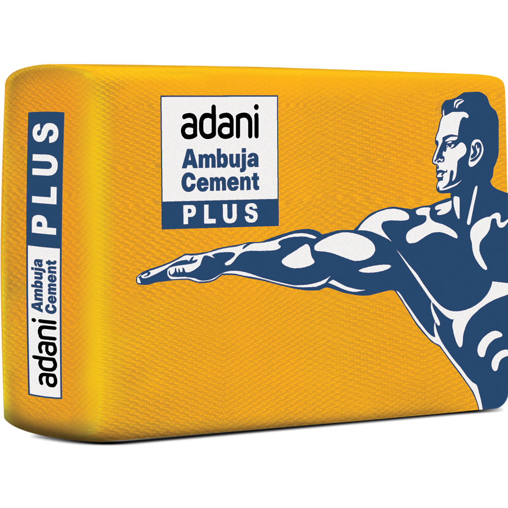
Ambuja · Adani Cement
PPC cement using performance enhancers for denser concrete and a smooth finish.
Common uses
Roof slabs, especially in humid or high-rainfall areas; RCC, masonry and plaster.
Ambuja · Adani Cement
Composite cement combining fly ash and slag for workability and a smooth finish.
Common uses
Foundations, beams, columns, slabs, brick masonry and wall plaster.
Scroll to explore. Confirm availability and follow your engineer’s specification.
Explore Jindal Panther TMT bar sizes and grades for your material list. Other iron and steel rod brands can be discussed with the dealership.
Explore bar diameters ↓Fe500D & Fe550D
Ductile reinforcement grades
12 metre bars
Standard manufacturer length
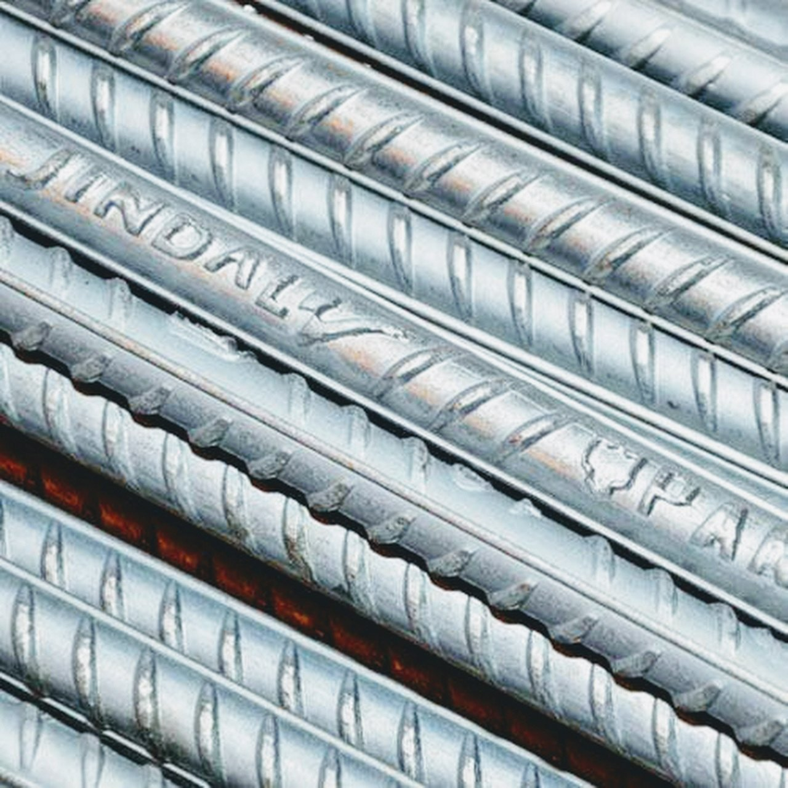
Nominal diameter comparison · mm
Jindal Panther · Ribbed TMT
Typical applications
Rings, stirrups and crack-control reinforcement.
Nominal diameter comparison · mm
Jindal Panther · Ribbed TMT
Typical applications
Slab distribution reinforcement, stairs, lintels and chajjas.
Nominal diameter comparison · mm
Jindal Panther · Ribbed TMT
Typical applications
Floor slabs, stairs, lintels and smaller beams.
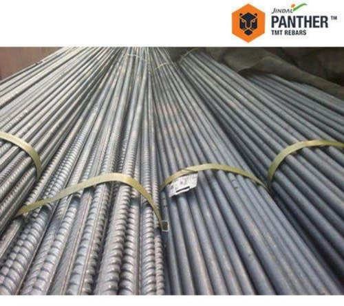
Nominal diameter comparison · mm
Jindal Panther · Ribbed TMT
Typical applications
Beams, columns, plinth beams and parking slabs.
Nominal diameter comparison · mm
Jindal Panther · Ribbed TMT
Typical applications
Main columns, foundations and load-bearing beams.
Nominal diameter comparison · mm
Jindal Panther · Ribbed TMT
Typical applications
Heavier structural reinforcement in commercial buildings and high-rise projects.
Nominal diameter comparison · mm
Jindal Panther · Ribbed TMT
Typical applications
Heavy-load structures, bridges and larger commercial projects.
Nominal diameter comparison · mm
Jindal Panther · Ribbed TMT
Typical applications
Heavy-load structures and infrastructure, as specified in the structural drawings.
Nominal diameter comparison · mm
Jindal Panther · Ribbed TMT
Typical applications
Major structural members, bridges and heavy infrastructure.
Nominal diameter comparison · mm
Jindal Panther · Ribbed TMT
Typical applications
Large infrastructure and heavily loaded structural members.
Scroll through diameters. Your engineer specifies size, grade and spacing.
Grade and diameter work together. Follow your structural drawings, then ask us to confirm the brand, grade, size and quantity available.
Read the manufacturer brochure ↗The numbers denote minimum yield strength of 500 / 550 MPa; D denotes a ductile grade. Higher grade does not automatically mean you can reduce bar diameter or quantity.
TMT processing combines a hard outer layer with a ductile core. Surface ribs support the bond between steel and concrete.
Look for Jindal Panther branding and the applicable ISI mark and licence details. Confirm the grade and invoice when ordering.
The supplied brochure describes a 6–40 mm range and also lists 36 mm. The current manufacturer page lists a broader 6–50 mm range, Fe600 and CRS options; ask about special requirements.
Displayed weights are approximate manufacturer values. Photographs show real Jindal Panther bars and are representative of the product range, not a size-specific or to-scale photograph. The comparison below each photograph shows relative nominal diameters. Size applications are general guidance, not structural design recommendations. All grade and size combinations require availability confirmation.
Manufacturer range & weight chart ↗
Read Jindal Panther’s explanation of common diameter applications, from stirrups to heavy structural reinforcement ↗
Confirm your final reinforcement schedule with the project engineer before ordering.
Ask about other construction items alongside your cement and steel order.
Choose who you’d like to enquire with. Both businesses serve your construction-material requirements.
Cement, steel rods and construction materials for your building requirements.
M/S SAI ARNAB
GSTIN: 21CLGPP2258C1ZH
Cement, steel rods and construction materials for your building requirements.
SAI ANSHRUTA CONSTRUCTION
GSTIN: 21EYJPP6233H1ZD
Kuanpal, Mahanga, nearby Cuttack areas and Balichandrapur, Jajpur. Share your exact site location to discuss supply arrangements.
Tell us the material, brand, quantity and site location. Prepare a clear enquiry for your chosen dealership.